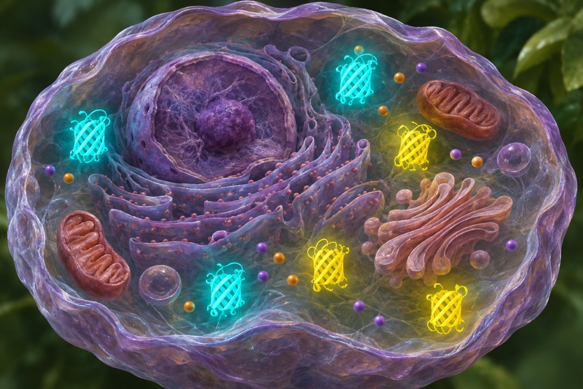
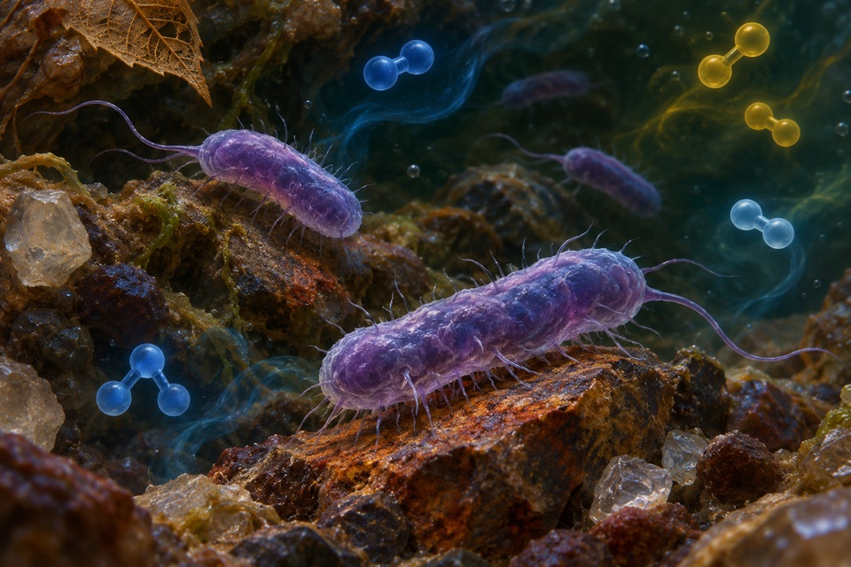

Module 01
Dynamic optical measurement of cytosolic lactate
Measure relative lactate dynamics and distinguish concentration from inferred exchange.
Evidence recordOpen any of the ten modules to see the reported observation, its sources, and the research questions still open.
Measure relative lactate dynamics and distinguish concentration from inferred exchange.
Evidence record
Measure the change in waggle distance signal with visual motion at a fixed travel distance.
Evidence record
Measure shoot curvature after reorientation and score final tiller angle as a separate trait.
Evidence record
Make and identify the acidic succinoglycan polymer and separate assembly from export.
Evidence record
Estimate relative intracellular chloride changes in individual cells.
Evidence record
Measure size-choice accuracy when viewpoint and apparent size change.
Evidence record
Measure coil handedness, twist and force response during controlled extension of an existing tendril.
Evidence record
Determine whether nitrate nitrogen is retained as ammonium rather than removed as gaseous nitrogen.
Evidence record
Track a hydrogen-peroxide-linked reporter response in a defined living cell compartment.
Evidence record
Measure the relative paths of water and particles along and through a filter rack.
Evidence record